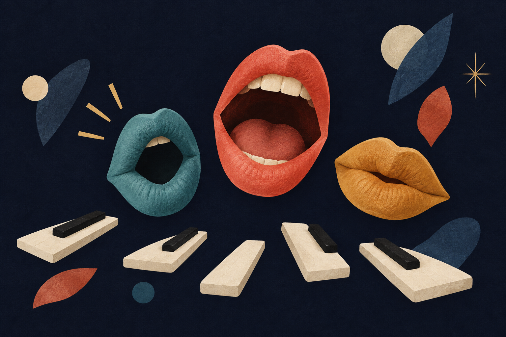

Choir
Ask an audience volunteer to stand & follow.
Unsure? Tap a note above.
Tonnetz
12 notes
Shape of chords
Process
Isomorphic keyboard
Classic
Harmony as a graph
Authentic cadence
Thank you!
Now play your own song: aigimon.ai/tonnetz
Even better on a touchscreen.